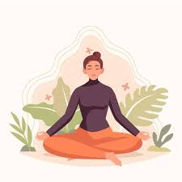

Nuestro servicios
En nuestro centro de terapias holisticas te ofrecemos distintas alternativas para armonizar tu cuerpo, mente y espiritu, adaptadas a tus necesidades y momentos de vida:

REIKI
Canalizacion de energia universal para equilibrar tus centros energeticos, reducir el estres y promover la relajacion profunda.
TAROT
Herramienta de autoconocimiento que brinda claridad y orientacion para la toma de decisiones y el crecimiento personal.

MEDITACION
Espacios de calma y conexion interior, donde a traves de tecnicas de respiracion, visualizacion y atencion plena, para relajar la mente y lograr un equilibrio emocional superior.
MEDITACION
REIKI
TAROT
Espacios de calma y conexión interior, donde a traves de tecnicas de respiración, visualización y atención plena, para relajar la mente y lograr un equilibrio emocional superior.
Canalización de energía universal para equilibrar centros energéticos, reducir el estres y promover la relajacion profunda.
Herramienta de autoconocimiento que brinda claridad y orientación para la toma de decisiones